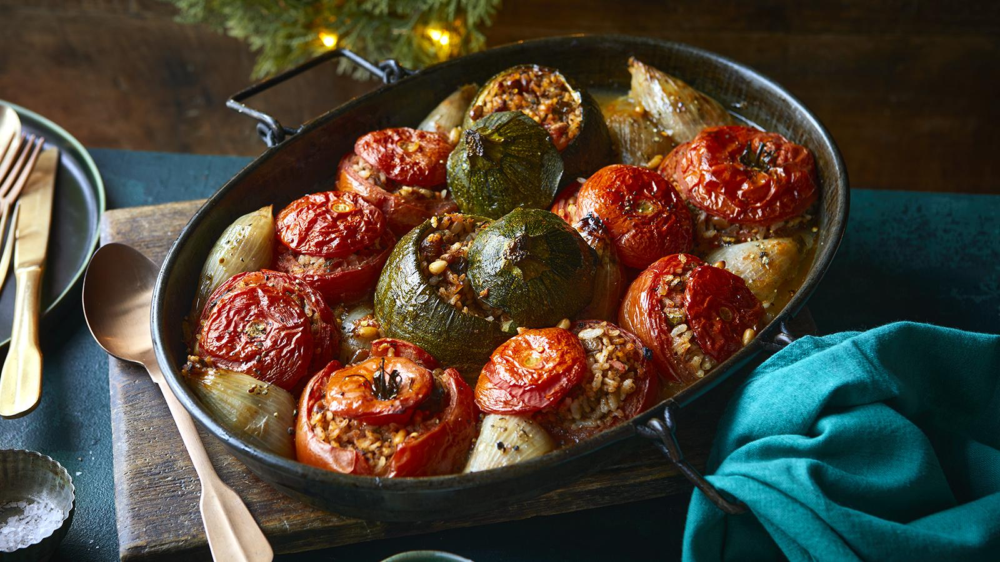
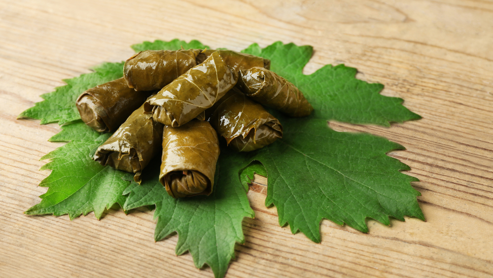

#10
Ingredientes: 6 tomates ou pimentões grandes, 1 xícara de arroz, a polpa dos tomates picada, cebola, alho, hortelã e azeite.
Receita: Remova o topo e a polpa dos vegetais. Refogue a cebola, alho, arroz e a polpa picada. Recheie os vegetais com essa mistura (não encha totalmente, pois o arroz cresce). Coloque em uma assadeira com um pouco de água e azeite e asse por 1 hora a 180°C.

#9
Ingredientes: 250g de farinha, 1 colher de chá de fermento biológico seco, 1 xícara de água morna, mel, canela e nozes picadas.
Receita: Misture a farinha, fermento e água até formar uma massa pegajosa. Deixe descansar por 1 hora. Frite pequenas porções de massa em óleo quente até dourarem. Escorra e cubra com mel quente, canela e nozes.
#8
Ingredientes: Massa filo, 300g de nozes picadas, canela, manteiga derretida. Calda: 1 xícara de açúcar, 1 xícara de água e 1/2 xícara de mel.
Receita: Intercale folhas de massa filo pinceladas com manteiga e camadas de nozes com canela. Corte em losangos antes de assar. Asse a 160°C por 50 minutos. Ferva os ingredientes da calda por 10 minutos e despeje a calda fria sobre a baklava quente assim que sair do forno.

#7
Ingredientes: Folhas de uva (em conserva ou frescas escaldadas), 1 xícara de arroz, cebola picada, hortelã, salsinha, suco de limão e azeite.
Receita: Misture o arroz cru com as ervas, cebola e azeite. Coloque uma colher do recheio no centro de cada folha e enrole firmemente. Disponha os charutos em uma panela, cubra com água e suco de limão. Cozinhe em fogo baixo por cerca de 40 minutos.

#6
Ingredientes: 1 pacote de massa filo, 500g de espinafres frescos, 200g de queijo feta, 2 ovos, cebola picada e manteiga derretida.
Receita: Refogue o espinafre com cebola até murchar e escorra bem o líquido. Misture com o feta esfarelado e os ovos. Pincele camadas de massa filo com manteiga em uma assadeira, coloque o recheio e cubra com mais folhas de massa. Asse a 180°C até ficar bem dourado.

#5
Ingredientes: 250g de iogurte grego natural (escorrido), 1 pepino grande, 2 dentes de alho esmagados, 1 colher de sopa de azeite, suco de meio limão e hortelã ou endro fresco.
Receita: Rale o pepino e esprema-o em um pano para tirar toda a água. Misture o iogurte com o alho, azeite, limão e ervas. Adicione o pepino seco e misture bem. Deixe gelar antes de servir.

#4
Ingredientes: Tomates maduros, pepino, cebola roxa, pimentão verde, azeitonas Kalamata, uma fatia grossa de queijo feta, azeite extravirgem e orégano.
Receita: Corte os vegetais em pedaços grandes e rústicos. Misture-os em uma tigela com as azeitonas. Coloque o bloco de queijo feta por cima (sem esfarelar), regue com bastante azeite e polvilhe orégano seco.

#3
Ingredientes: Tiras de carne (porco ou frango), pão pita, tomate, cebola roxa, batatas fritas e molho tzatziki.
Receita: Tempere a carne com páprica, orégano e alho; grelhe até ficar crocante. Aqueça o pão pita, espalhe o tzatziki, coloque a carne, fatias de tomate, cebola e algumas batatas fritas. Enrole como um cone.
#2
Ingredientes: 1kg de carne (porco ou frango) em cubos, suco de 1 limão, 1/4 xícara de azeite, 1 colher de sopa de orégano seco, sal e pimenta.
Receita: Marine a carne no limão, azeite, orégano, sal e pimenta por pelo menos 1 hora. Espete os cubos em palitos de madeira e grelhe em fogo alto até ficarem dourados e suculentos. Sirva com pão pita e limão.

#1
Ingredientes: 3 berinjelas grandes, 500g de carne moída (cordeiro ou vaca), 1 cebola, 2 dentes de alho, molho de tomate, canela em pó, vinho branco, 500ml de molho bechamel e queijo ralado.
Receita: Corte as berinjelas em fatias e grelhe-as. Refogue a carne com cebola, alho, tomate, um pouco de canela e vinho até o molho secar. Em um refratário, intercale camadas de berinjela e carne. Cubra com o bechamel e queijo. Leve ao forno a 180°C por 45 minutos até dourar.